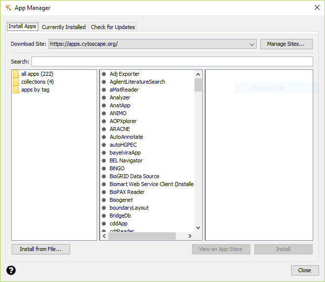

Installing OCSANA+¶
The OCSANA+ jar file can be downloaded from the OCSANA+ github repository
To install apps within Cytoscape, go to the menu bar and choose Apps → App Manager…. At the top of the App Manager window, make sure you have the Install Apps tab selected.
You can install OCSANA+ by clicking the “Install from File” button on the bottom-left, and navigating to the downloaded folder.